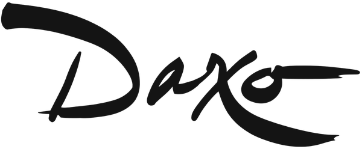
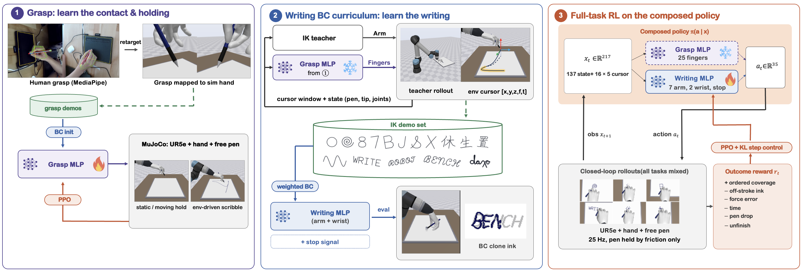
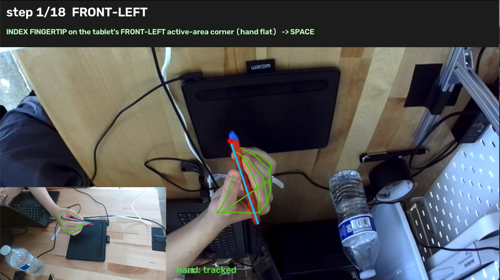

Force-Aware Imitation and Reinforcement Learning for High-DoF Robotic Handwriting
Daxo Robotics
One 25-DoF hand holding its tools by friction alone. Each tile is one episode, looping on its own.
Dexterous robotic handwriting with a freely held pen requires stable grasp retention, precise trajectory execution, and contact-force regulation in one coupled system. We present Grip, Trace, Write, a staged learning framework that first learns a reusable grasp controller, then trains a trajectory-conditioned writer from inverse-kinematics demonstrations, and finally improves writing through RL with rewards defined on task outcomes. A two-branch actor preserves the distinct roles of hand stabilization and arm–wrist motion while keeping both closed-loop through the shared state and pen dynamics. Across diverse tracing and writing tasks, the resulting policy improves completion, precision, force regulation, and execution efficiency over both behavior cloning and IK, and generalizes without fine-tuning to unseen English and Chinese content.
Writing with a freely held pen asks for three things at once, and robot writers have so far simplified away at least one of them.
The hand has 25 finger joints; with the wrist and arm, the policy drives 34 joints at once. Five fingers can hold a pen the way a person does, but they also give the policy many more ways to lose it: random exploration on the fingers easily drops the pen, and teleoperating 25 finger joints to write at millimetre precision is impractical, so there are no demonstrations to copy directly.
Most robot writers mount the pen on the arm or hold it with two or three fingers.
Good writing needs the tip in the right place and pressing with the right force: a millimetre off and the stroke misses, too light and the ink breaks, too hard and the pen slips or tilts. Every stroke comes with a requested force profile, so the policy has to track position and regulate contact force at the same time, through a pen it holds only by friction.
Most systems track the path and leave the force uncontrolled or hold it at a single setpoint.
Pressing vs. holding. The force that makes ink pushes the pen back into the fingers and can make it slip.
Moving vs. holding. Every acceleration, landing and turn shifts the pen in the grip, so the tip is never exactly where the arm puts it.
Stroke after stroke. Each stroke is a fresh landing; small errors carry over and compound across a word or a Chinese character.
Prior systems each remove one coupling: the pen bolted to the arm, the pen moved in the air, or one stroke at a time.
Three stages, one physical loop: the fingers keep the pen, the arm and wrist write, and both see the same state.

We record a person writing on a drawing tablet with two webcams and, after calibration, track the hand and pen with MediaPipe. The tripod grip from 2,915 tracked frames is retargeted to the 25 joints of the robot hand; it is the reference pose that grasp synthesis and the teacher start from.
Hand landmarks (green), pen axis (blue) and pen tip (red); the inset shows the second webcam.

The pen is a free body: nothing attaches it to the hand. A grasp policy is cloned from 240 teacher episodes and refined with 8 M steps of RL while the environment holds the arm still, swings it through the air, and drags the pen across the paper. Under each video, the bars show the contact force on each fingertip as it plays: thumb, index and middle finger form the tripod; ring and little finger rest.
Hold still
Arm swings the hand
Dragged across the paper
An inverse-kinematics (IK) teacher drives the arm and wrist along the requested stroke while the learned grasp holds the pen, so the demonstrations come from the same compliant system the student will control. Part of the data is collected with noise added to the actions. One behavior-cloning policy is fit on traces, digits, letters, words and Chinese characters together.
IK teacher demonstration, with the learned grasp holding the pen
PPO then trains the composed policy on outcomes: ink coverage in stroke order, ink off the target, contact force against the request, time, and keeping the pen. No reward term ties it to the teacher, so it can surpass the teacher. Drag the slider to watch one digit through 40 M steps of RL; the chart marks the same checkpoint on the mean over all tasks.
Fifty matched seeds per task. The final policy beats both its BC initialization and the IK teacher it learned from.
Force plots: requested (dashed), measured pen–paper contact (solid).
Held-out English words, four-character idioms, and Chinese characters with seven or more strokes, written without fine-tuning.
unseen words · 91.6% mean completion
four-character idioms · 92.9%
unseen characters · 91.6%
Handwriting is the first tool. The same hand and simulator already run brush calligraphy, sketching, painting and chopsticks; these are not part of this paper.
Previews run a scripted controller. See every task →
@misc{chen2026griptracewrite,
title = {Grip, Trace, Write: Force-Aware Imitation and Reinforcement Learning
for High-DoF Robotic Handwriting},
author = {Chen, Rongqian and Chen, Yiding and Zhou, Jijie and Jiahao, Tom Z.},
year = {2026}
}